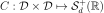
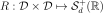
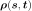
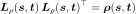
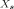

Covariance models¶
We consider  a multivariate
stochastic process of dimension
a multivariate
stochastic process of dimension  , where
, where  is an event,
is an event,  is a domain of
is a domain of  ,
,
 is a multivariate index and
is a multivariate index and
 .
.
We note  the random variable at
index
the random variable at
index  defined by
defined by
 and
and
 a realization of the process
a realization of the process
 , for a given defined by
, for a given defined by
 .
.
If the process is a second order process, we note:
 its mean function, defined by
its mean function, defined by
 ,
,
its covariance function, defined by ,
,
its correlation function, defined for all ,
by
,
by  such that for all
such that for all  ,
,
 .
.
In a general way, the covariance models write:

where:
 is the scale parameter
is the scale parameter id the amplitude parameter
id the amplitude parameter is the Cholesky factor of
is the Cholesky factor of

:

The correlation function  may depend on additional
specific parameters which are not made explicit here.
may depend on additional
specific parameters which are not made explicit here.
The global correlation is given by two separate correlations:
the spatial correlation between the components of
which is given by the correlation matrix
and the vector of marginal variances
, it links together the components of
the correlation between

and
In the general case, the correlation links each component
to all the components of and
;
In some particular cases, the correlation is such that
and that link does not depend on the component
. In that case, can be defined from the scalar function
by
. Then, the covariance model writes:

API: